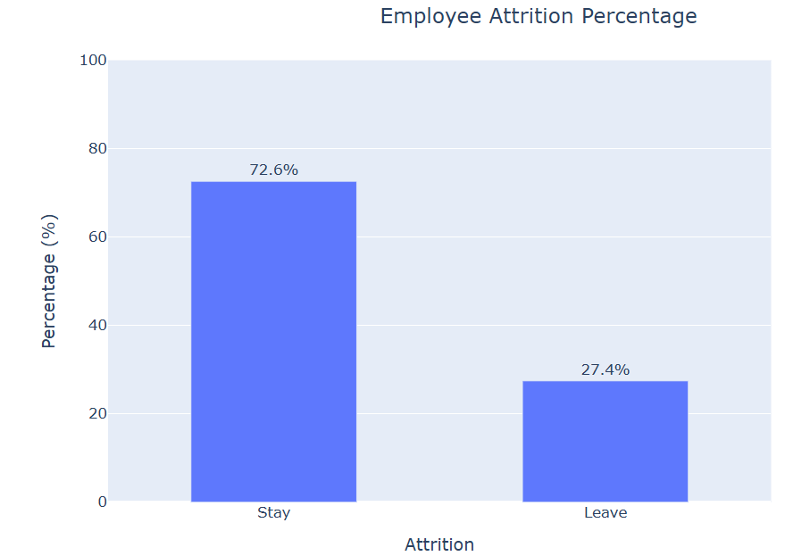
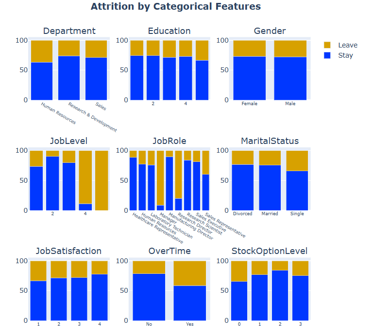
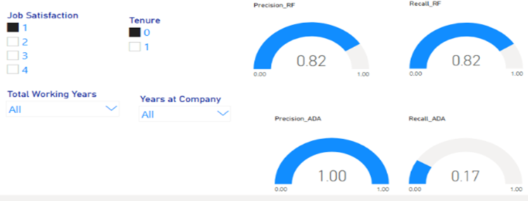
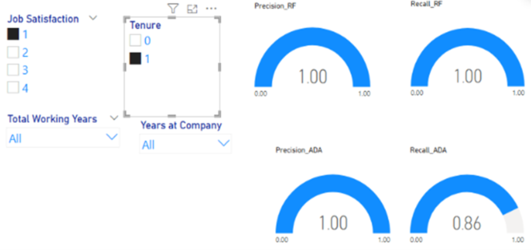

Case Study: Employee Attrition
Introduction
The historical data has shown that the attrition rate is 27% as shown in Figure 1, which is higher than the average of 17.4% (Ravio, 2026). This has a negative impact on businesses related productitity, costs, and loss of repugation. With a high attrition rate, a business loses its talents and employees with better work experience. Also, it increases costs to businesses to recruit and train new employees. Additionally, it damages a company's repuation.
Data Exploration
The data is sourced from Panvansubhash (2016) with 35 attributes including attrition, department, education, gender, job level, job role, marital status, job satisfaction, over time, and stock option level from 1470 IBM employees, and it will be used to study causes of attrition.
Attrition
ThisAs showing in Figure 1, the attrition rate is 27.4%. This high rate can be attributed by different reasons, but as shown in Figure 2, it is most likely associated with job level, job role, and over time.
Figure 1
Employee Attrition

Relationship between Attrition and Some Relevant Attributes
The relationsh between attrition and the relevant attributes as shown in Figure 2 can be identified by the pattern of attrition rates among the levels of each attribute. For example, as the job level increases (Figure 2), the attrition rate also increses. With this pattern, the relationships of attrition and attributes can be summerized.
- Department: the attribution rates seem different among different departments.
- Education: The higher eduction, the more likely it is.
- Gender: there seems to be no difference in attrition.
- Job level: the higher job level, the more likely it is.
- Job role:manager and research director are the most likely for attritrion.
- Job statisfication: As the job satisfaction level increases, the attrition rate decreases.
- Over time: Those who clock overtime are more likely in attrition.
- stock option lelvel: level 0 and level 3 are more likely in attrition.
Figure 2
Percentage of Attrition by Attributes

Prediciton Models for Attrition
The models that will be used to predict attrition include the random forest classification and AdaBoost classifition. Each of them has different algorithmic optimization. Random forest is a tree-based classification with the majority voting system while AdaBoost is based on a sequence of week classifiers, and those weak classifiers will be corrected for their mis-classifications sequentiall. After fitting with the dataset, their performance matrics are
Assessing the Perofermance of Random Forest and AdaBoost Classification Metrics
Analysis of Classification Rates for Random Forest and AdaBoost Classification
The prediction dashboard as shown in Figure 3 and 4 has shown that for job satisfication level 1 and tenure of 0,
random forest performs consistently better than AdaBoost. The precision for random forest
is 82% and the recall is 82% compared to AdaBoost of 100% and 17% on the precision and
the recall.Similarly, at the job satisfation level 1 and tenure 1, random forest is still better
than AdaBoost. Its precision and recall are 100% compared to the recision and the recall of
AdaBoost of 100% and 86%.
Figure 3
Performance Metrics between Random Forest and AdaBoost to Predict Attrition at Job Satisfactio = 1 and Tenure = 0

Figure 4
Performance Metrics between Random Forest and AdaBoost to Predict Attrition at Job Satisfaction = 1 and Tenure = 1

Table 1
Performance Metrics between Random Forest and AdaBoost to Predict Attrition at each level of Job Satisfaction and Tenure
| Job Satisfaction | Tenure | Rate | |||
|---|---|---|---|---|---|
| Random Forest | AdaBoost | ||||
| Precision | Recall | Precision | Recall | ||
| 1 | 0 | 0.82 | 0.82 | 1 | 0.12 |
| 1 | 1 | 1 | 1 | 1 | 0.86 |
| 2 | 0 | 0.67 | 0.67 | 1 | 0.36 |
| 2 | 1 | 1 | 1 | 1 | 0.86 |
| 3 | 0 | 0.92 | 0.92 | 1 | 0.32 |
| 3 | 1 | 0.86 | 0.86 | 1 | 0.86 |
| 4 | 0 | 0.92 | 0.92 | 1 | 0.36 |
| 4 | 1 | 1 | 1 | 1 | 0.78 |
| Average | 0.90 | 0.90 | 1 | 0.57 | |
Analysis of Performance metrics of Random Forest and AdaBoost
As shown in Table 2 and Table 3, the random forest classification is more consistent than AdaBoost across preformance metrics. For example, the recall rate for the random forest is 52% compared to only 43% for AdaBoost.
Table 2
Random Forest Classification Metrics
| Metric | Proportion | |
|---|---|---|
| Train | Test | |
| Accuracy | 0.97 | 0.83 |
| Precision | 0.97 | 0.87 |
| Recall | 0.92 | 0.52 |
Table 3
AdaBoost Classification Metrics
| Metric | Proportion | |
|---|---|---|
| Train | Test | |
| Accuracy | 0.84 | 0.83 |
| Precision | 1.00 | 1.00 |
| Recall | 0.43 | 0.43 |
Recommendation for the Model to Predict Attrition
In sum, the random foresest is a better choice for prediction attrition than AdaBoost in regard to performance matrix.
References
Panvansubhash(2016). IBM HR analytics employee attrition & performance. Kaggle. https://www.kaggle.com/datasets/pavansubhasht/ibm-hr-analytics-attrition-dataset
Ravio (2022). Retention trends 2026: attrition rates data and employee retention strategies. https://www.simplilearn.com/data-sandbox-in-big-data-article.